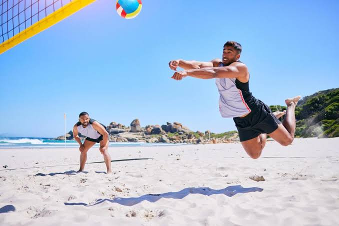
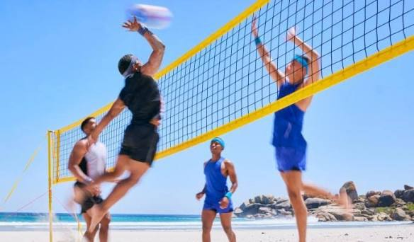
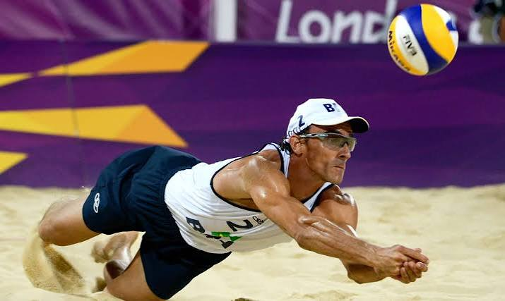
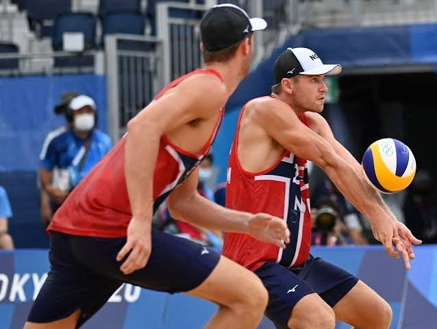

A história do vôlei de areia
O vôlei de areia surgiu na década de 1920, nas praias da Califórnia, nos Estados Unidos, como uma forma de lazer inspirada no vôlei tradicional. Com o passar dos anos, o esporte ficou mais organizado e começaram a surgir campeonatos, tornando-se popular em vários países.
No Brasil, o vôlei de areia ganhou destaque a partir da década de 1980, quando muitos atletas passaram a competir em torneios nacionais e internacionais. Hoje, o país é considerado uma das maiores potências da modalidade.
Em 1996, o vôlei de areia passou a fazer parte dos Jogos Olímpicos, aumentando ainda mais sua popularidade. Atualmente, o esporte é disputado por duas equipes de dois jogadores, em uma quadra de areia, com o objetivo de fazer a bola tocar o chão da quadra adversária.



